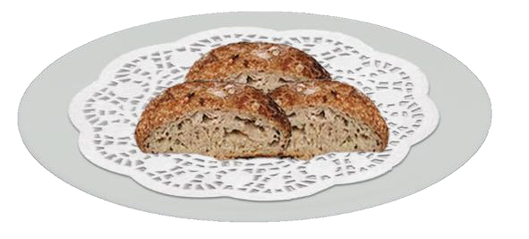

Food and Human Nutrition
Form Two
Rice bread
Ingredient (serve 4 people)
250 g rice flour
50 g sugar
2 g baking powder
21 ml coconut milk or water
40 ml cooking oil
2 g ground cinnamon
4 g yeast
450 ml water
Method
1. Sieve rice flour with baking powder. Add yeast, cinnamon and sugar.
2. Prepare rice batter by adding coconut milk or water into the rice flour mixture.
3. Leave the mixture to rise for 20 ‒ 25 minutes.
4. Heat the oil in a saucepan.
5. Pour the batter and cover the saucepan with a lid. Then, leave it to simmer.
6. When dried, put the mixture in an oven at 150°C for 15 minutes. Then, reduce the heat to 121°C. Continue baking until the bread is firm and golden brown.
7. Serve it on a plate as shown in Figure 2.10.

Figure 2.10: Rice bread